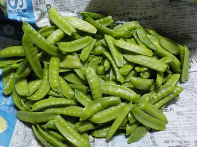
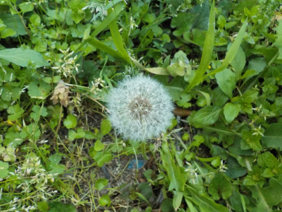
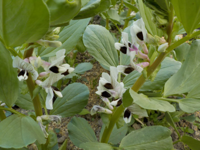
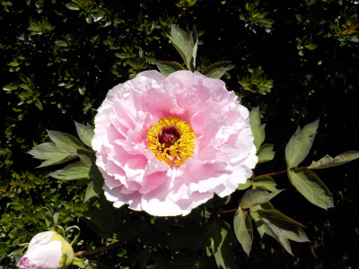
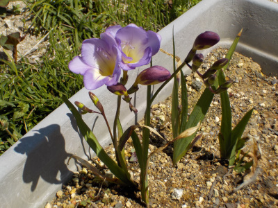
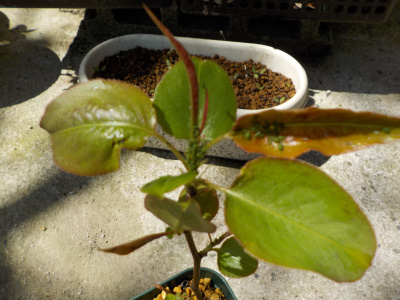

遊びで植物を育てよう
2021/04/25
キヌサヤを沢山収獲しました。

美味しそうな豆が沢山撮れました。
これから毎日食べれます。
【4月TOP】
【日記TOP】
【園芸TOP】
2021/04/24
タンポポがあってもいいかな。

この種が飛び散ってあちこちでタンポポが生えるんだろうな。
雑草は畑に生えて欲しくないですが、どうせ何かが生えるんだからこれが飛んで育っても別にいいかな。
邪魔だって思ったものだけ取ります。
【4月TOP】
【日記TOP】
【園芸TOP】
2020/04/10
ソラマメの花って独特ですね。

葉っぱが邪魔しているのであまり目立たない花ですが、よく見ると大きくて変わった形です。
葉っぱが小さければ観賞用になりそう。
【4月TOP】
【日記TOP】
【園芸TOP】
2020/04/10
ボタンが一つ咲きました。

今年は入学式の時期のボタンが咲きました。
でも一つだけです。
まだツボミが小さいものもあるので、長い期間ボタンの花が楽しめそうな感じがします。
【4月TOP】
【日記TOP】
【園芸TOP】
2020/04/10
今年のフリージアはたぶん失敗。

フリージアを小さく育てようと思い、植えるのを遅くしたり水やりをしなかったです。
希望通り小さな株で花が咲いたんですが、成長した数が少ない。
プランターがスカスカです。
これから芽が出て花が咲けばいいですが、今から芽が出るなんてことはきっとないですね。
芽が出なかった球根はダメになっているのかな？
【4月TOP】
【日記TOP】
【園芸TOP】
2020/04/10
アブラムシがやって来ました。

虫の季節になりました。
アブラムシが大量に付いていたのでスプレーをシュシュってかけました。
これから毛虫もやってくると思うので、小さな鉢物には予防の薬をかけておきました。
【4月TOP】
【日記TOP】
【園芸TOP】
過去の日記
【2024年4月の日記】
【2023年4月の日記】
【2022年4月の日記】
【2021年4月の日記】
【2020年4月の日記】
【2019年4月の日記】
【2018年4月の日記】
【2017年4月の日記】
【2016年4月の日記】
【2015年4月の日記】
【2014年4月の日記】
【2013年4月の日記】
【4月TOP】
【日記TOP】
【園芸TOP】
畑仕事じゃないよ。
【おいしいものを食べよう。】【しっかり寝よう。】
【ソロ活をしよう!】【季節感のあることをしよう。】【動画視聴はほどほどに。】【当サイトの全てのコンテンツは無断転載禁止です。】